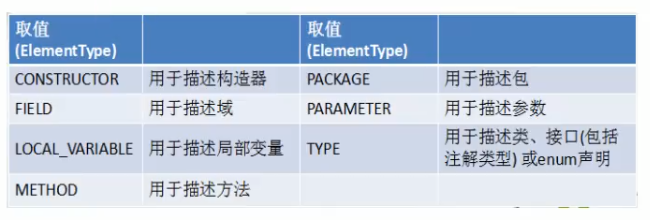

自定义枚举类 enum定义枚举类 注解 自定义注解 4个元注解 可重复注解 类型注解
枚举类
- 类的对象只有有限个，确定的。我们称此类为枚举类
- 比如：星期：星期一、….、星期日
- 季节：春天 夏天 秋天 冬天
- 当需要定义一组常量时，强烈建议使用枚举类
- 如果枚举类只一个对象，则可以作为单例模式的实现方式
自定义枚举类 JDK5.0之前
1 | class Season{ |
使用enum关键字定义枚举类 JDK5.0之后
说明：定义的枚举类默认继承于java.lang.Enum类（toString默认是输出对象名，比如SUMMER）
1 | // 使用enum关键字枚举类 |
- enum类的常用方法
- value(): 返回所有的枚举类对象的构成的数组。可以很方便地遍历所有的枚举值
- valueOf(String str): 可以把一个字符串转为对应的枚举类对象。要求字符串必须是枚举类对象
- toString(): 返回当前枚举类对象常量的名称
1 | public class SeasonTest1{ |
使用enum关键字定义的枚举类实现接口的情况
情况一：实现接口，在enum类中实现抽象方法
1 | interface Info{ |
情况二：让枚举类的对象分别实现接口中的抽象方法
1 | interface Info{ |
注解（Annotation）
注解的理解
- 从JDK5.0开始，Java增加了对元数据（MetaData）的支持，也就是注解
- Annotation其实就是代码里的特殊标记，这些标记可以在编译，类加载，运行时被读取，并执行相应的处理。通过使用Annotation，程序员可以在不改变原有逻辑的情况下，在源文件中嵌入一些补充信息。代码分析工具、开发工具和部署工具可以通过这些补充信息进行验证或者进行部署。
- Annotation可以像修饰符一样被使用，可用于修饰包，类，构造器，方法，成员变量，参数，局部变量的声明，这些信息被保存在Annotation的”name=value”对中。
- 在JavaSE中，注解的使用目的比较简单，例如标记过时的功能，忽略警告等。在JavaEE/Android中注解占据了更重要的角色，例如用来配置应用程序的任何切面，代替JavaEE旧版中所遗留的繁冗代码和XML配置等
- 未来的开发模式都是基于注解的，JPA是基于注解的，Spring2.5以上都是基于注解的，Hibernate3.x以后也是基于注解的，现在的Struts2有一部分也是基于注解的了，注解是一种趋势，一定程度上可以说：框架=注解 + 反射 + 设计模式。
常见的Annotation示例
- 使用Annotation 时要在其前面增加@ 符号, 并把该Annotation 当成一个修饰符使用。用于修饰它支持的程序元素
示例一：生成文档相关的注解
- @author标明开发该类模块的作者，多个作者之间使用逗号分割
- @version标明该类模块的版本
- @see参考转向，也就是相关主题
- @since从哪个版本开始增加的
- @param对方法中某参数的说明，如果没有参数就不能写
- @return对方法返回值的说明，如果方法的返回值类型是void就不能写
- @exception对方法可能抛出的异常进行说明，如果方法没有用throws显式抛出的异常就不能写
- 其中
- @param @return和 @exception这三个标记都是只用于方法的。
@param的格式要求：@param 形参名 形参类型 形参说明
@return的格式要求：@return 返回值类型 返回值说明
@exception的格式要求：@exception 异常类型 异常说明
@param 和 @exception可以并列多个
- @param @return和 @exception这三个标记都是只用于方法的。
示例二：在编译时进行格式检查(JDK内置的三个基本注解)
- @Override: 限定重写父类方法, 该注解只能用于方法
- @Deprecated: 用于表示所修饰的元素(类, 方法等)已过时。通常是因为所修饰的结构危险或存在更好的选择（源码里有很多）
- @SuppressWarnings: 抑制编译器警告
- e.g. @SuppressWarnings({ “unused”, “rawtypes” })
- 示例三：跟踪代码依赖性，实现替代配置文件功能（在框架中）
- Servlet3.0提供了注解(annotation),使得不再需要在web.xml文件中进行Servlet的部署。
- spring框架中关于“事务”的管理
如何自定义注解：参照@SuppressWarnings定义
- 定义新的Annotation类型使用@interface关键字
- 自定义注解自动继承了java.lang.annotation.Annotation接口
- Annotation的成员变量在Annotation定义中以无参数方法的形式来声明。其方法名和返回值定义了该成员的名字和类型。我们称为配置参数。类型只能是八种基本数据类型、String类型、Class类型、enum类型、Annotation类型、或以上所有类型的数组。
- 可以在定义Annotation的成员变量时为其指定初始值,指定成员变量的初始值可使用default关键字
- 如果只有一个参数成员，建议使用参数名为value
- 如果定义的注解含有配置参数，那么使用时必须指定参数值，除非它有默认值。格式是“参数名=参数值”，如果只有一个参数成员，且名称为value，可以省略“value=”
- 没有成员定义的Annotation称为标记; 包含成员变量的Annotation称为元数据Annotation
注意：1. 自定义注解必须配上注解的信息处理流程（使用反射）才有意义
2. 如果注解有成员，在使用注解时，需要指明成员的值
3. 自定义注解通常都会指明两个元注解：Retention和Target
1 | public MyAnnotation { |
JDK中4个基本的元注解的使用
元注解：其他注解的注解
JDK 的元Annotation 用于修饰其他Annotation 定义
JDK5.0提供了4个标准的meta-annotation类型，分别是：
Retention: 只能用于修饰一个Annotation定义, 用于指定该Annotation 的生命周期, @Rentention包含一个RetentionPolicy类型的成员变量, 使用@Rentention时必须为该value成员变量指定值:
- RetentionPolicy.SOURCE: 在源文件中有效（即源文件保留），编译器直接丢弃这种策略的注释（即在.class文件中不会保留此注解）
- RetentionPolicy.CLASS: 在class文件中有效（即class保留），当运行Java 程序时, JVM 不会保留注解。这是默认值
- RetentionPolicy.RUNTIME: 在运行时有效（即运行时保留），当运行Java 程序时,JVM 会保留注释。程序只有这样才可以通过反射获取该注释。
Target: 用于修饰Annotation 定义, 用于指定被修饰的Annotation 能用于修饰哪些程序元素。@Target 也包含一个名为value 的成员变量

Documented（出现频率较低）: 用于指定被该元Annotation 修饰的Annotation 类将被javadoc工具提取成文档。默认情况下，javadoc是不包括注解的。
- 定义为Documented的注解必须设置Retention值为RUNTIME。
Inherited（出现频率较低）:被它修饰的Annotation 将具有继承性。如果某个类使用了被@Inherited 修饰的Annotation, 则其子类将自动具有该注解。
- 比如：如果把标有@Inherited注解的自定义的注解标注在类级别上，子类则可以继承父类类级别的注解
- 实际应用中，使用较少
JDK8中注解的新特性
可重复注解
① 在MyAnnotation上声明@Repeatable，成员值为MyAnnotations.class
② MyAnnotation的Target和Retention等元注解与MyAnnotations相同。
类型注解
- JDK1.8之后，关于元注解@Target的参数类型ElementType枚举值多了两个: TYPE_PARAMETER,TYPE_USE。
- 在Java8之前，注解只能是在声明的地方所使用，Java8开始，注解可以应用在任何地方。
- ElementType.TYPE_PARAMETER 表示该注解能写在类型变量的声明语句中（如：泛型声明）。
- ElementType.TYPE_USE 表示该注解能写在使用类型的任何语句中。